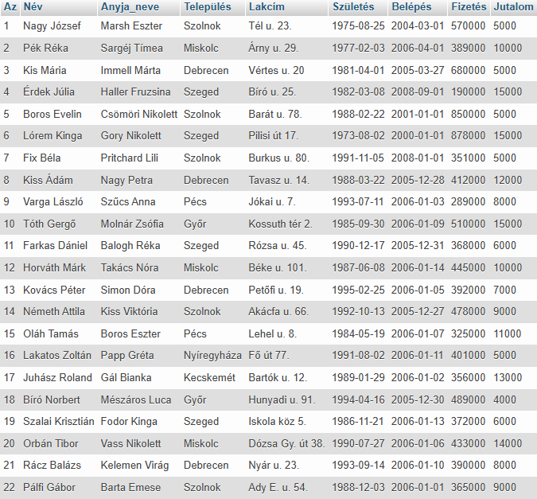
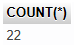
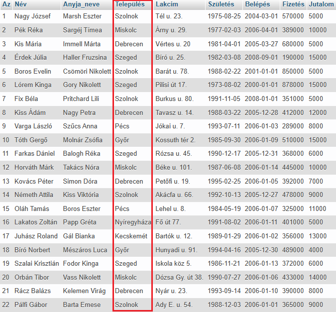
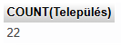
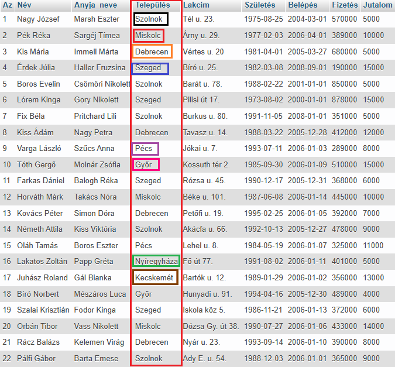
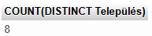

A COUNT() függvény visszaadja a megadott kritériumnak megfelelő sorok számát.
A COUNT(*) függvény megszámolja a táblázat sorainak teljes számát (beleértve a NULL értékeket is).
SELECT
COUNT(*)
FROM dolgozók;


Látható, hogy az eredménytábla a kiválasztott mezőből áll.
Ilyenkor mindig csak egy sorral (rekord) tér vissza.
SELECT
COUNT(Település)
FROM dolgozók;


Látható, hogy az eredménytábla a kiválasztott mezőből áll.
Ilyenkor mindig csak egy sorral (rekord) tér vissza.
Vegyük észre hogy minden várost megszámolt, többször is!
SELECT
COUNT(DISTINCT Település)
FROM dolgozók;


Látható, hogy az eredménytábla a kiválasztott mezőből áll.
Ilyenkor mindig csak egy sorral (rekord) tér vissza.
Vegyük észre hogy minden várost megszámolt, de csak egyszer!